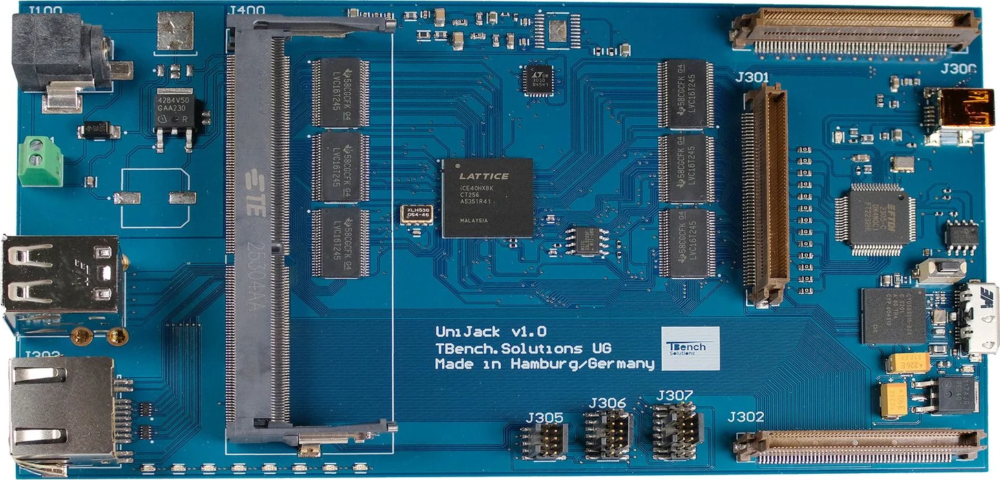

Building model…

3D needs WebGL, which is unavailable in this browser. Showing the photograph the model is built from.

3D needs WebGL, which is unavailable in this browser. Showing the photograph the model is built from.